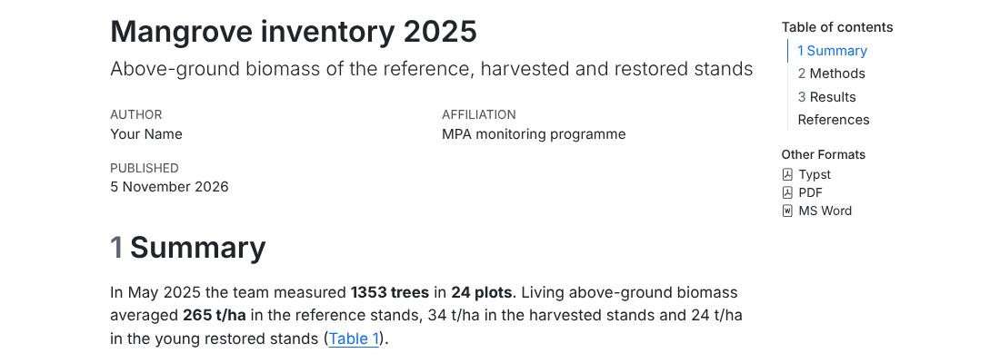
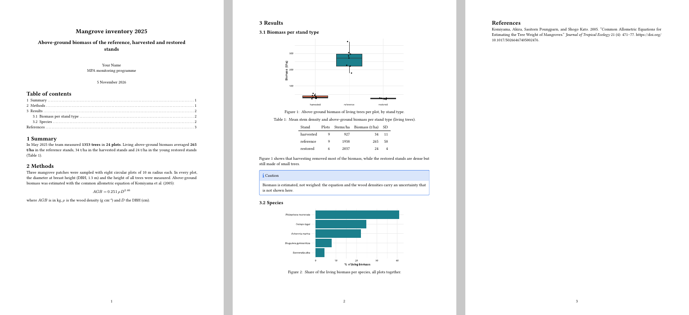

.Rmd report to a .qmd report
(YAML, chunk options with #|, inline code);@fig-…, @tbl-…);.Rmd en rapport .qmd
(YAML, options de chunk avec #|, code en ligne) ;@fig-…, @tbl-…)
;Data of this session (simulated). The
mangrove inventory of May 2025: 24 circular plots of 10
m radius in three patches (Ankarabe, Ambalakely, Sarondrano), each patch
with reference, harvested and restored stands. In each plot the team
measured every tree: species, DBH (diameter at breast
height, 1.3 m, with a diameter tape), height (clinometer) and status
(alive, dead, cut). mangrove_species.csv gives a wood
density per species (approximate values for the exercise; for real work
use the Global Wood Density Database). Two field errors remain: a few
species codes in lower case, and four DBH typed without the decimal
point (33 instead of 3.3). Type: one row = one tree; continuous
measurements and categories. references.bib contains real
publications cited in the report.
Données de cette séance (simulées).
L’inventaire des mangroves de mai 2025 : 24 placettes
circulaires de 10 m de rayon dans trois massifs (Ankarabe, Ambalakely,
Sarondrano), chaque massif avec des peuplements de référence, exploités
et restaurés. Dans chaque placette, l’équipe a mesuré chaque arbre :
espèce, DHP (diamètre à hauteur de poitrine, 1,3 m, au
ruban diamétrique), hauteur (clinomètre) et état (vivant, mort, coupé).
mangrove_species.csv donne une densité du bois par espèce
(valeurs approximatives pour l’exercice ; pour un vrai travail, utilisez
la Global Wood Density Database). Deux erreurs de terrain restent :
quelques codes d’espèces en minuscules, et quatre DHP saisis sans la
virgule (33 au lieu de 3,3). Type : une ligne = un arbre ;
mesures continues et catégories. references.bib contient de
vraies publications citées dans le rapport.
⇩ mangrove_report.qmd (template) ⇩ references.bib
Quarto is the successor of R Markdown, made by the same team (Posit). It uses the same engine for R code (knitr) and the same converter (pandoc), so everything you learned in Sessions A3–A4 is still valid. What it adds:
#|.Quarto is included in RStudio (recent versions). You can also install it separately from https://quarto.org. In RStudio: File → New File → Quarto Document; the Render button replaces Knit.
Quarto est le successeur de R Markdown, fait par la même équipe (Posit). Il utilise le même moteur pour le code R (knitr) et le même convertisseur (pandoc) : tout ce que vous avez appris aux séances A3–A4 reste valable. Ce qu’il apporte :
#|.Quarto est inclus dans RStudio (versions récentes). Vous pouvez aussi l’installer séparément depuis https://quarto.org. Dans RStudio : File → New File → Quarto Document ; le bouton Render remplace Knit.
R Markdown (.Rmd) |
Quarto (.qmd) |
|
|---|---|---|
| output in YAML | output: html_document |
format: html |
| options of the whole document | knitr::opts_chunk$set(echo = FALSE) |
execute: echo: false in the YAML |
| chunk options | ```{r trend, fig.cap = "…"} |
#| label: fig-trend and #| fig-cap: "…"
inside the chunk |
| inline code | `r x` |
`{r} x` (and the old form still works) |
| figure cross-reference | \@ref(fig:trend) with bookdown |
@fig-trend |
| table cross-reference | \@ref(tab:cover) |
@tbl-cover |
| page break | \newpage (PDF only) |
{{< pagebreak >}} (all formats) |
| render | Knit, rmarkdown::render() |
Render, quarto render file.qmd (Terminal) or
quarto::quarto_render() |
R Markdown (.Rmd) |
Quarto (.qmd) |
|
|---|---|---|
| sortie dans le YAML | output: html_document |
format: html |
| options du document entier | knitr::opts_chunk$set(echo = FALSE) |
execute: echo: false dans le YAML |
| options de chunk | ```{r trend, fig.cap = "…"} |
#| label: fig-trend et #| fig-cap: "…"
dans le chunk |
| code en ligne | `r x` |
`{r} x` (l’ancienne forme marche encore) |
| renvoi à une figure | \@ref(fig:trend) avec bookdown |
@fig-trend |
| renvoi à un tableau | \@ref(tab:cover) |
@tbl-cover |
| saut de page | \newpage (PDF seulement) |
{{< pagebreak >}} (tous formats) |
| produire | Knit, rmarkdown::render() |
Render, quarto render fichier.qmd (Terminal) ou
quarto::quarto_render() |
Option names use a dash in Quarto
(fig-cap, fig-width, code-fold)
where R Markdown used a dot (fig.cap). The dotted names are
still accepted in #| lines, but use the dashes in new
documents.
Les noms d’options prennent un tiret dans Quarto
(fig-cap, fig-width, code-fold)
là où R Markdown utilisait un point (fig.cap). Les noms à
point sont encore acceptés dans les lignes #|, mais
utilisez les tirets dans les nouveaux documents.
Functions and arguments used here
| Function / argument | What it does | Value it expects |
|---|---|---|
#| option: value |
a chunk option written inside the chunk, one per
line, in YAML style (key: value,
true/false in lower case) |
|
#| label: fig-agb |
name of the chunk; the prefix fig- / tbl-
makes it a numbered figure / table that @fig-agb can
cite |
text without spaces |
#| fig-cap:, #| tbl-cap: |
caption of the figure / table | text in quotes |
#| fig-width:, #| fig-height: |
size of the figure, in inches | numbers |
#| echo:, #| include:, #|
eval:, #| warning: |
the same options as in R Markdown (Session A3), with YAML values | true / false |
`{r} x` |
inline code in Quarto: replaced by the value of x |
Fonctions et arguments utilisés ici
| Fonction / argument | Ce qu’il fait | Valeur attendue |
|---|---|---|
#| option: value |
une option de chunk écrite dans le chunk, une par
ligne, au style YAML (clé: valeur,
true/false en minuscules) |
|
#| label: fig-agb |
nom du chunk ; le préfixe fig- / tbl- en
fait une figure / un tableau numéroté que @fig-agb peut
citer |
texte sans espaces |
#| fig-cap:, #| tbl-cap: |
légende de la figure / du tableau | texte entre guillemets |
#| fig-width:, #| fig-height: |
taille de la figure, en pouces | nombres |
#| echo:, #| include:, #|
eval:, #| warning: |
les mêmes options qu’en R Markdown (séance A3), avec des valeurs YAML | true / false |
`{r} x` |
code en ligne dans Quarto : remplacé par la valeur de
x |
Download mangrove_report.qmd and
references.bib (above), put them in reports/
of your project, and the mangrove CSV files in data/raw/.
Read it calmly: every feature of this session is in it.
Téléchargez mangrove_report.qmd et
references.bib (ci-dessus), placez-les dans
reports/ de votre projet, et les fichiers CSV des mangroves
dans data/raw/. Lisez-le tranquillement : toutes les
notions de cette séance s’y trouvent.
---
title: "Mangrove inventory 2025"
subtitle: "Above-ground biomass of the reference, harvested and restored stands"
author:
- name: "Your Name"
affiliation: "MPA monitoring programme"
date: today
date-format: "D MMMM YYYY"
lang: en
format:
html:
toc: true
number-sections: true
code-fold: true
embed-resources: true # one single .html file to send by e-mail
typst:
toc: true
number-sections: true
papersize: a4
margin:
x: 2.5cm
y: 2cm
citeproc: true # author-year citations, as in HTML
pdf:
toc: true
lof: true # list of figures
lot: true # list of tables
number-sections: true
papersize: a4
geometry: margin=2.5cm
docx:
toc: true
bibliography: references.bib
execute:
echo: false
warning: false
message: false
---
```{r}
#| label: setup
#| include: false
library(dplyr)
library(ggplot2)
library(here)
trees <- read.csv(here("data", "raw", "mangrove_trees.csv"))
species <- read.csv(here("data", "raw", "mangrove_species.csv"))
plots <- read.csv(here("data", "raw", "mangrove_plots.csv"))
# Cleaning (see the field notes): codes in capitals; a DBH > 30 cm on a tree
# shorter than 8 m is a typing error (decimal point forgotten)
trees <- trees %>%
mutate(species_code = toupper(species_code),
dbh_cm = ifelse(dbh_cm > 30 & height_m < 8, dbh_cm / 10, dbh_cm)) %>%
left_join(species, by = c("species_code" = "code")) %>%
mutate(agb_kg = 0.251 * wood_density * dbh_cm^2.46) # Komiyama et al. (2005)
area_ha <- pi * 10^2 / 1e4 # one plot = circle of 10 m radius
per_plot <- trees %>% filter(status == "alive") %>%
group_by(plot_id) %>%
summarise(stems_ha = n() / area_ha, agb_t_ha = sum(agb_kg) / 1000 / area_ha, .groups = "drop") %>%
left_join(plots, by = "plot_id")
# numbers used in the text
n_trees <- nrow(trees)
n_plots <- nrow(plots)
by_status <- per_plot %>% group_by(status) %>%
summarise(plots = n(), stems_ha = mean(stems_ha), agb = mean(agb_t_ha), sd = sd(agb_t_ha), .groups = "drop")
agb_ref <- round(by_status$agb[by_status$status == "reference"])
agb_har <- round(by_status$agb[by_status$status == "harvested"])
agb_res <- round(by_status$agb[by_status$status == "restored"])
```
# Summary
In May 2025 the team measured **`{r} n_trees` trees** in **`{r} n_plots` plots**.
Living above-ground biomass averaged **`{r} agb_ref` t/ha** in the reference stands,
`{r} agb_har` t/ha in the harvested stands and `{r} agb_res` t/ha in the young
restored stands (@tbl-status).
# Methods
Three mangrove patches were sampled with eight circular plots of 10 m radius each.
In every plot, the diameter at breast height (DBH, 1.3 m) and the height of all trees
were measured. Above-ground biomass was estimated with the common allometric equation
of @komiyama2005:
$$
AGB = 0.251 \, \rho \, D^{2.46}
$$
where $AGB$ is in kg, $\rho$ is the wood density (g cm^-3^) and $D$ the DBH (cm).
# Results
## Biomass per stand type
```{r}
#| label: fig-agb
#| fig-cap: "Above-ground biomass of living trees per plot, by stand type."
#| fig-width: 6
#| fig-height: 3.5
ggplot(per_plot, aes(status, agb_t_ha, fill = status)) +
geom_boxplot(show.legend = FALSE) +
geom_jitter(width = 0.1, size = 1.5, show.legend = FALSE) +
scale_fill_manual(values = c(reference = "#1b7f8c", harvested = "#d9694a", restored = "#e8c27a")) +
labs(x = NULL, y = "Biomass (t/ha)") +
theme_minimal(base_size = 11)
```
```{r}
#| label: tbl-status
#| tbl-cap: "Mean stem density and above-ground biomass per stand type (living trees)."
by_status %>%
mutate(across(c(stems_ha, agb, sd), \(x) round(x, 0))) %>%
knitr::kable(col.names = c("Stand", "Plots", "Stems/ha", "Biomass (t/ha)", "SD"))
```
@fig-agb shows that harvesting removed most of the biomass, while the restored
stands are dense but still made of small trees.
::: {.callout-note}
## Caution
Biomass is estimated, not weighed: the equation and the wood densities carry an
uncertainty that is not shown here.
:::
## Species
```{r}
#| label: fig-species
#| fig-cap: "Share of the living biomass per species, all plots together."
#| fig-width: 6
#| fig-height: 3
trees %>% filter(status == "alive") %>%
group_by(species) %>% summarise(agb = sum(agb_kg), .groups = "drop") %>%
mutate(share = 100 * agb / sum(agb)) %>%
ggplot(aes(share, reorder(species, share))) + geom_col(fill = "#1b7f8c") +
labs(x = "% of living biomass", y = NULL) + theme_minimal(base_size = 11) +
theme(axis.text.y = element_text(face = "italic"))
```
{{< pagebreak >}}
# References {.unnumbered}
::: {#refs}
:::Here is the top of the HTML output (with the links to the other formats, top right), and the three pages of the PDF made with Typst:
Voici le haut de la sortie HTML (avec les liens vers les autres formats, en haut à droite), et les trois pages du PDF fait avec Typst :


Quarto keys are written with a hyphen
(number-sections, code-fold), R Markdown keys
with an underscore (number_sections,
code_folding): same idea, different names — one more case
where two tools do not use the same name for the same thing. Indentation
(two spaces) says which key belongs to which.
Top level (valid for every format):
| Key | What it does | Value it expects |
|---|---|---|
title, subtitle |
texts at the top of the document | text |
author |
the author(s); a simple text, or a list where each author has
name and optionally affiliation,
email, orcid |
text, or a list starting with - name: |
date |
date under the title; today = the day of rendering |
today, or a date 2025-11-30 |
date-format |
how the date is written: D day, MMMM month
in letters, YYYY year |
a pattern, e.g. "D MMMM YYYY" → 5 November 2026 |
lang |
language of the words Quarto writes itself (Table of contents, Figure, Table, and, References) | en, fr… |
format |
opens the list of outputs; each one (html,
typst, pdf, docx) has its own
options indented below it |
output names |
bibliography |
the BibTeX file of the references (next section) | path to a .bib file |
execute |
default options of all chunks (below) | options indented below |
Under format::
| Key | Formats | What it does | Value it expects |
|---|---|---|---|
toc |
all | adds a table of contents | true / false |
toc-depth |
all | heading levels in the table of contents | a number (default 3) |
number-sections |
all | numbers the headings 1, 1.1… (needed for @sec-
references) |
true / false |
code-fold |
html | adds a Code button above each chunk; code hidden until the reader clicks | true / false |
embed-resources |
html | puts images, styles and scripts inside the .html: one file to send | true / false |
papersize |
typst, pdf | paper size | a4, us-letter |
margin with x and y |
typst | x = left and right margins, y = top and
bottom |
lengths: 2.5cm, 1in |
geometry |
pdf (LaTeX) | margins, in the syntax of the LaTeX package geometry | margin=2.5cm, or left=3cm,right=2cm |
citeproc |
typst | lets Quarto format the citations (author–year, as in HTML) instead of Typst’s own numbered style | true / false |
lof, lot |
pdf (LaTeX) | list of figures, list of tables after the table of contents | true / false |
reference-doc |
docx | Word file whose styles are copied (Session A9) | path to a .docx |
Under execute: (the same option written
as #| in a chunk wins over it):
| Key | What it does | Value |
|---|---|---|
echo |
shows the code in the output | true / false |
warning, message |
shows R warnings / messages (e.g. those of
library()) |
true / false |
cache |
keeps chunk results between two renderings | true / false |
freeze |
in a project only (Session A9): re-run the code only when the file changed | auto, true, false |
The list of all options of a format is in the Quarto reference: https://quarto.org/docs/reference/ (choose HTML, Typst, PDF or Word). In RStudio, Ctrl + Space inside the YAML proposes the valid keys.
Les clés Quarto s’écrivent avec un tiret
(number-sections, code-fold), celles de R
Markdown avec un tiret bas
(number_sections, code_folding) : même idée,
noms différents — encore un cas où deux outils n’utilisent pas le même
nom pour la même chose. L’indentation (deux espaces) indique quelle clé
appartient à laquelle.
Premier niveau (valable pour tous les formats) :
| Clé | Ce qu’elle fait | Valeur attendue |
|---|---|---|
title, subtitle |
textes en haut du document | texte |
author |
le ou les auteurs ; un texte simple, ou une liste où chaque auteur a
name et éventuellement affiliation,
email, orcid |
texte, ou une liste commençant par - name: |
date |
date sous le titre ; today = le jour de la
production |
today, ou une date 2025-11-30 |
date-format |
forme de la date : D jour, MMMM mois en
lettres, YYYY année |
un motif, ex. "D MMMM YYYY" → 5 novembre 2026 |
lang |
langue des mots que Quarto écrit lui-même (Table des matières, Figure, Tableau, et, Références) | en, fr… |
format |
ouvre la liste des sorties ; chacune (html,
typst, pdf, docx) a ses options
décalées en dessous |
noms de sorties |
bibliography |
le fichier BibTeX des références (section suivante) | chemin vers un .bib |
execute |
options par défaut de tous les chunks (ci-dessous) | options décalées en dessous |
Sous format: :
| Clé | Formats | Ce qu’elle fait | Valeur attendue |
|---|---|---|---|
toc |
tous | ajoute une table des matières | true / false |
toc-depth |
tous | niveaux de titres dans la table des matières | un nombre (3 par défaut) |
number-sections |
tous | numérote les titres 1, 1.1… (nécessaire pour les renvois
@sec-) |
true / false |
code-fold |
html | ajoute un bouton Code au-dessus de chaque chunk ; code caché jusqu’au clic du lecteur | true / false |
embed-resources |
html | met images, styles et scripts dans le .html : un seul fichier à envoyer | true / false |
papersize |
typst, pdf | format du papier | a4, us-letter |
margin avec x et y |
typst | x = marges gauche et droite, y = haut et
bas |
longueurs : 2.5cm, 1in |
geometry |
pdf (LaTeX) | marges, dans la syntaxe du package LaTeX geometry | margin=2.5cm, ou left=3cm,right=2cm |
citeproc |
typst | laisse Quarto mettre en forme les citations (auteur–date, comme en HTML) au lieu du style numéroté propre à Typst | true / false |
lof, lot |
pdf (LaTeX) | liste des figures (list of figures), liste des tableaux (list of tables) après la table des matières | true / false |
reference-doc |
docx | fichier Word dont les styles sont copiés (séance A9) | chemin vers un .docx |
Sous execute: (la même option écrite en
#| dans un chunk l’emporte) :
| Clé | Ce qu’elle fait | Valeur |
|---|---|---|
echo |
montre le code dans la sortie | true / false |
warning, message |
montre les avertissements / messages de R (ex. ceux de
library()) |
true / false |
cache |
garde les résultats des chunks entre deux productions | true / false |
freeze |
dans un projet seulement (séance A9) : ne relance le code que si le fichier a changé | auto, true, false |
La liste de toutes les options d’un format est dans la référence Quarto : https://quarto.org/docs/reference/ (choisissez HTML, Typst, PDF ou Word). Dans RStudio, Ctrl + Espace dans le YAML propose les clés valides.
A label with the right prefix makes an element numbered and referable:
| Element | Label | Caption | In the text |
|---|---|---|---|
| figure (chunk) | #| label: fig-agb |
#| fig-cap: "…" |
@fig-agb → “Figure 1” |
| table (chunk) | #| label: tbl-status |
#| tbl-cap: "…" |
@tbl-status → “Table 1” |
| section | # Results {#sec-results} |
@sec-results → “Section 3” (needs
number-sections: true) |
|
| equation | $$ … $$ {#eq-agb} |
@eq-agb → “Equation 1” |
|
| image file | {#fig-map} |
the text in brackets | @fig-map |
Several figures side by side: #| layout-ncol: 2 in a
chunk that makes two plots, with
#| fig-subcap: ["Reference", "Harvested"].
Un label avec le bon préfixe rend un élément numéroté et citable :
| Élément | Label | Légende | Dans le texte |
|---|---|---|---|
| figure (chunk) | #| label: fig-agb |
#| fig-cap: "…" |
@fig-agb → « Figure 1 » |
| tableau (chunk) | #| label: tbl-status |
#| tbl-cap: "…" |
@tbl-status → « Tableau 1 » |
| section | # Résultats {#sec-results} |
@sec-results → « Section 3 » (demande
number-sections: true) |
|
| équation | $$ … $$ {#eq-agb} |
@eq-agb → « Équation 1 » |
|
| fichier image | {#fig-map} |
le texte entre crochets | @fig-map |
Plusieurs figures côte à côte : #| layout-ncol: 2 dans
un chunk qui fait deux graphiques, avec
#| fig-subcap: ["Référence", "Exploité"].
references.bib). Zotero exports it (File → Export
library → BibTeX), and the Better BibTeX extension
keeps it up to date automatically; Google Scholar and journal websites
also give BibTeX entries.bibliography: references.bib.| You write | You get (default style, author–year) |
|---|---|
[@komiyama2005] |
(Komiyama, Poungparn, and Kato 2005) |
@komiyama2005 |
Komiyama, Poungparn, and Kato (2005) |
[@hill2004; @komiyama2005] |
(Hill and Wilkinson 2004; Komiyama, Poungparn, and Kato 2005) |
[-@komiyama2005] |
(2005) — when the authors are already named |
[@hill2004, p. 25] |
(Hill and Wilkinson 2004, 25) |
::: {#refs} :::..csl file from the Zotero Style Repository (https://www.zotero.org/styles) and add
csl: apa.csl to the YAML.references.bib). Zotero l’exporte (Fichier → Exporter
la bibliothèque → BibTeX), et l’extension Better
BibTeX le tient à jour automatiquement ; Google Scholar et les
sites des revues donnent aussi des entrées BibTeX.bibliography: references.bib.| Vous écrivez | Vous obtenez (style par défaut, auteur–date) |
|---|---|
[@komiyama2005] |
(Komiyama, Poungparn, and Kato 2005) |
@komiyama2005 |
Komiyama, Poungparn, and Kato (2005) |
[@hill2004; @komiyama2005] |
(Hill and Wilkinson 2004; Komiyama, Poungparn, and Kato 2005) |
[-@komiyama2005] |
(2005) — quand les auteurs sont déjà nommés |
[@hill2004, p. 25] |
(Hill and Wilkinson 2004, 25) |
::: {#refs} :::..csl sur le Zotero Style Repository (https://www.zotero.org/styles) et ajoutez
csl: apa.csl au YAML. Avec lang: fr, « and »
devient « et ».@article{komiyama2005,
author = {Komiyama, Akira and Poungparn, Sasitorn and Kato, Shogo},
title = {Common allometric equations for estimating the tree weight of mangroves},
journal = {Journal of Tropical Ecology}, year = {2005}, volume = {21}, number = {4}, pages = {471--477},
doi = {10.1017/S0266467405002476}}A trap that hides citations. Pandoc reads
@key [text] as “citation + comment”. So
as shown in @tbl-status [@komiyama2005] silently swallows
the citation into the table reference. Put a word or a comma between
them: (@tbl-status), following @komiyama2005. When a
citation disappears or shows ?@key, check the key
(case-sensitive) and the spelling of bibliography:.
Un piège qui cache des citations. Pandoc lit
@clé [texte] comme « citation + commentaire ». Ainsi
comme le montre @tbl-status [@komiyama2005] avale
silencieusement la citation dans le renvoi au tableau. Mettez un mot ou
une virgule entre les deux :
(@tbl-status), d'après @komiyama2005. Quand une citation
disparaît ou affiche ?@clé, vérifiez la clé (sensible à la
casse) et l’orthographe de bibliography:.
Option (under format:) |
HTML | Word | PDF (LaTeX) | PDF (Typst) |
|---|---|---|---|---|
toc: true, toc-depth: 2 |
yes (side bar) | yes | yes | yes |
number-sections: true |
yes | yes | yes | yes |
lof: true, lot: true (lists of figures /
tables) |
— | — | yes | — |
When a report needs lists of figures and tables (a thesis chapter, a
report for a ministry), use format: pdf (LaTeX). The
template does it; the second page of its LaTeX PDF holds the table of
contents, then the List of Figures and List of Tables.
LaTeX must be installed once: quarto install tinytex in the
Terminal.
Option (sous format:) |
HTML | Word | PDF (LaTeX) | PDF (Typst) |
|---|---|---|---|---|
toc: true, toc-depth: 2 |
oui (barre latérale) | oui | oui | oui |
number-sections: true |
oui | oui | oui | oui |
lof: true, lot: true (listes des figures /
tableaux) |
— | — | oui | — |
Quand un rapport a besoin de listes des figures et des tableaux (un
chapitre de thèse, un rapport pour un ministère), utilisez
format: pdf (LaTeX). Le modèle le fait ; la deuxième page
de son PDF LaTeX contient la table des matières, puis la List of
Figures et la List of Tables (Liste des figures,
Liste des tableaux avec lang: fr). LaTeX
s’installe une fois : quarto install tinytex dans le
Terminal.
quarto render reports/mangrove_report.qmd # every format of the YAML
quarto render reports/mangrove_report.qmd --to html # one format
quarto render reports/mangrove_report.qmd --to docx
quarto preview reports/mangrove_report.qmd # live preview while you writeFrom R, the package quarto does the same:
quarto::quarto_render("reports/mangrove_report.qmd", output_format = "html").
Parameters work as in Session A4: a params: field in the
YAML, and quarto render report.qmd -P mpa:Tanjona or
quarto::quarto_render(..., execute_params = list(mpa = "Tanjona")).
Depuis R, le package quarto fait la même chose :
quarto::quarto_render("reports/mangrove_report.qmd", output_format = "html").
Les paramètres marchent comme à la séance A4 : un champ
params: dans le YAML, et
quarto render rapport.qmd -P mpa:Tanjona ou
quarto::quarto_render(..., execute_params = list(mpa = "Tanjona")).
Try it. Add a section label
{#sec-methods} and refer to it from the Summary; give the
equation the label {#eq-agb} and refer to it in the
Methods; add lang: fr and render again: what changed?
À vous. Ajoutez un label de section
{#sec-methods} et renvoyez-y depuis le résumé ; donnez à
l’équation le label {#eq-agb} et renvoyez-y dans les
méthodes ; ajoutez lang: fr et produisez à nouveau :
qu’est-ce qui a changé ?
mangrove_report.qmd to HTML and
Word (and to PDF if you installed TinyTeX or want to
try Typst). How many trees does the Summary report?dbh_cm > 30 & height_m < 8)?@hill2004 in the Methods (a sentence
about permanent monitoring plots) and check that it appears in the
References.tbl-patch) and refer to it in the text.reef_report.Rmd of Session A3 to a
.qmd (labels fig-/tbl-,
@fig-… references, execute: in the YAML).mangrove_report.qmd en HTML
et en Word (et en PDF si vous avez installé TinyTeX ou
voulez essayer Typst). Combien d’arbres le résumé indique-t-il ?dbh_cm > 30 & height_m < 8) ?@hill2004 dans les méthodes
(une phrase sur les placettes permanentes de suivi) et vérifiez qu’elle
apparaît dans les références.tbl-patch) et renvoyez-y dans le texte.reef_report.Rmd de la séance A3 en
.qmd (labels fig-/tbl-, renvois
@fig-…, execute: dans le YAML).If Render says “could not find function” or “object not
found”, remember that Quarto, like Knit, starts a new
session: every library() and every object must be
created in the .qmd. If a cross-reference shows
?@fig-agb, the label does not start with fig-
or the chunk has no fig-cap.
Si Render dit « could not find function » ou « object
not found », souvenez-vous que Quarto, comme Knit, démarre une
nouvelle session : chaque library() et
chaque objet doit être créé dans le .qmd. Si un renvoi
affiche ?@fig-agb, le label ne commence pas par
fig- ou le chunk n’a pas de fig-cap.
# 1-3: the numbers printed by the template (n_trees, agb_ref, agb_har); 2:
raw <- read.csv(here("data", "raw", "mangrove_trees.csv"))
sum(raw$dbh_cm > 30 & raw$height_m < 8)
# 4: in the setup chunk
share <- trees %>% filter(status == "alive") %>% group_by(species) %>%
summarise(agb = sum(agb_kg)) %>% mutate(p = 100 * agb / sum(agb))
p_rm <- round(share$p[share$species == "Rhizophora mucronata"], 1)
# ... and in the text: Rhizophora mucronata holds `{r} p_rm` % of the living biomass.
# 5: "Plots were permanent and re-measured following @hill2004."
# 6: a chunk with #| label: tbl-patch and #| tbl-cap: "Biomass per patch (t/ha)."
per_plot %>% group_by(patch) %>% summarise(agb = round(mean(agb_t_ha))) %>% knitr::kable()
# ... and in the text: "The three patches hold similar biomass (@tbl-patch)."